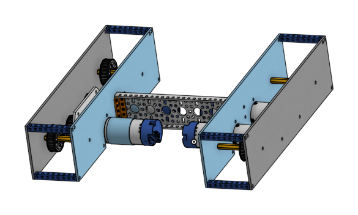
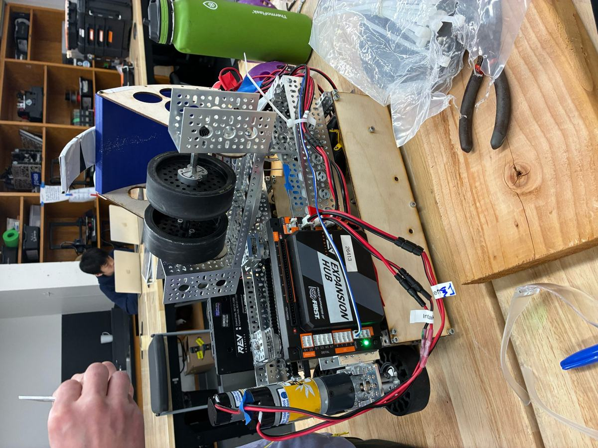
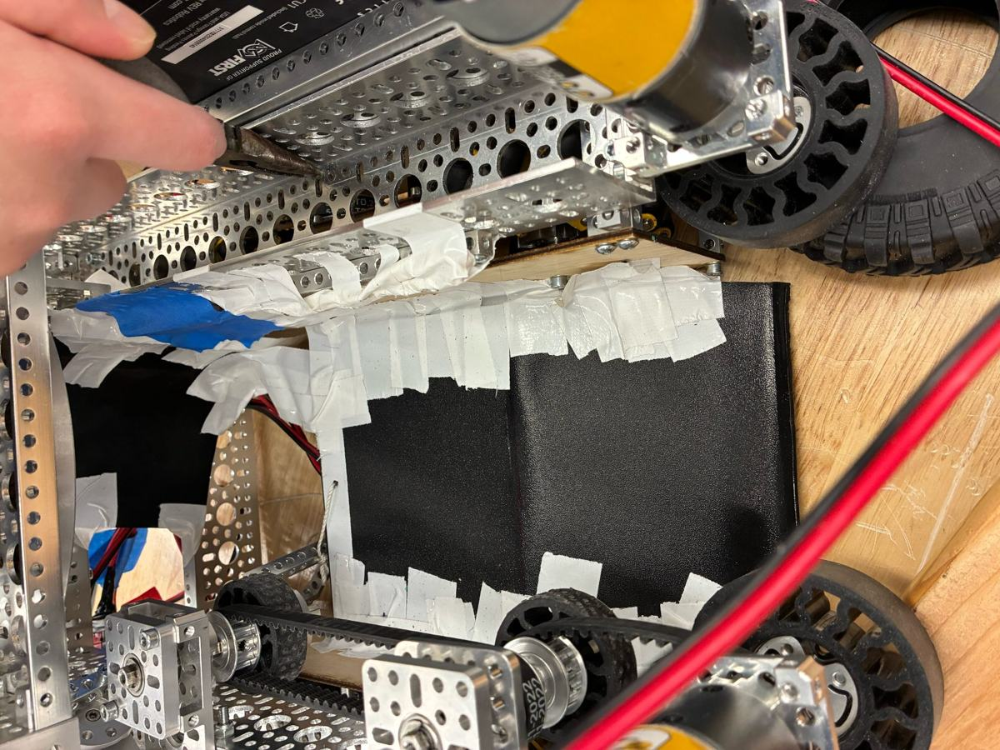

Chassis
We separated the drivetrain assemblies and developed custom plates, testing the layout before the final build.
Our second season: Sustain Award and a trip to States.

For Decode, we moved away from an early spinning-indexer concept. Our compact design uses a belt-driven parallel-plate chassis, gecko wheels to collect artifacts, a servo-powered transfer to stage them, and a turntable-mounted shooter that aims without rotating the whole robot.

We separated the drivetrain assemblies and developed custom plates, testing the layout before the final build.

Two front gecko wheels bring artifacts in; smaller belted wheels move them along the ramp toward the transfer.

A servo-powered holder stages artifacts until the shooter reaches speed, improving consistency and reducing jams.

The final concept puts a single powered wheel on a rotating mount to aim from different field positions without turning the drivetrain.
We competed at States after qualifying through our Ryken RoboBowl result.
Alongside our matches, the team received the Sustain Award at WNEU.

This win earned us our spot at the Massachusetts State Championship.